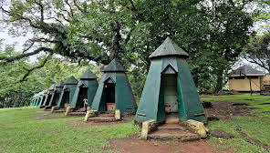

Step Into Paradise

Paseo Del Mar
Paseo Del Mar is located very close to the historical landmark and National Museum known as Fort Pilar. Paseo Del Mar is also known for its several restaurants, cafés and entertainment as well. With an eight arch entrance where there is 24 hour security, it is one of the most popular areas to visit among locals and tourists. The Paseo Del Mar is similar to the Manila bay walk and the evening it is lit up by a beautiful sunset as well. This is an ideal place with a great view and good food, where you can leisurely walk along the promenade. At night time the Paseo Del Mar is lit up with decorated lamps and there is much livelier atmosphere with a Dancing Fountain, food stalls and live entertainment as well. With the Santa Cruz Island Ferry nearby you can even see both Santa Cruz Islands from the shore which makes a beautiful ocean scene.
view more

Pasonanca Park
This public park is locate in Pasonanca in Zamboanga City. There are many enjoyable activites to take part making this a great place to visit with children too. Pasonanca Park contains 3 public swimming pools including a children’s pool with water slides. Another interesting feature includes the well-known Pasonanca Tree House that can be rented for small amount for special occasions or to spend the night in. There is no shortage of activities to keep occupied with. and some rare birds and to the beautiful butterfly garden filled with colourful butterflies and greenery. There are also campsites for scout training, and amphitheatre including other facilities for event or group activities with separate areas for men and womenPay a visit to the aviary where you can see peacocks owls in thethe La Jardin de Maria Clara Lobregat which is name after the late mayor. There is even a museum name after her that is located in the park as well.
view more